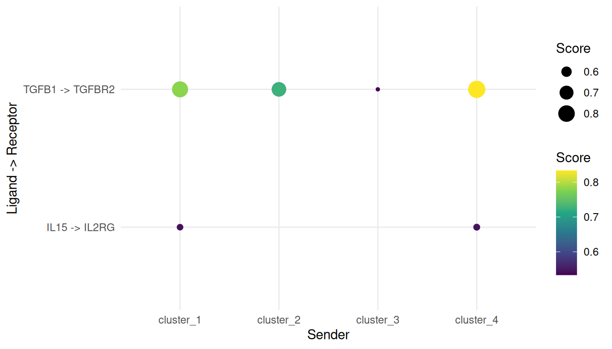

NicheNet ligand-receptor analysis with bixverse
2026-06-30
Intro
This vignette walks through a NicheNet-style ligand-receptor analysis on the PBMC3k data set using bixverse. It assumes familiarity with the SingleCells class and the basic processing pipeline; if you have not read the PBMC processing vignette, please do so first.
NicheNet ranks upstream ligands by how well their predicted target gene sets align with a gene set of interest in a receiver cell type. The pipeline here is:
- Build a ligand-target regulatory potential matrix from a signalling network (PPI) and a gene regulatory network (GRN).
- Define a gene set of interest in the receiver (here, T-cell marker genes).
- Score each ligand by how well its targets overlap with that gene set (AUROC, AUPR, correlations).
- Combine ligand activity with sender/receiver expression and DE into a single prioritisation score.
Loading and processing PBMC3k
We reuse the standard processing pipeline. See the PBMC processing vignette for commentary on each step.
pbmc3k_path <- download_pbmc3k()
tempdir_pbmc <- tempdir()
sc_object <- SingleCells(dir_data = tempdir_pbmc)
mtx_io_params <- get_cell_ranger_params(pbmc3k_path)
sc_object <- load_mtx(
object = sc_object,
sc_mtx_io_param = mtx_io_params,
mtx_streaming = FALSE,
.verbose = FALSE
)
setnames_sc(sc_object, table = "var", old = "column1", new = "gene_symbol")
var <- get_sc_var(sc_object)
symbol_to_ensembl <- setNames(var$gene_id, var$gene_symbol)
ensembl_to_symbol <- setNames(var$gene_symbol, var$gene_id)
# QC and processing
gs_of_interest <- list(
MT = var[grepl("^MT-", gene_symbol), gene_id],
Ribo = var[grepl("^RPS|^RPL", gene_symbol), gene_id]
)
sc_object <- gene_set_proportions_sc(
sc_object,
gs_of_interest,
.verbose = FALSE
)
# minimal cell filtering
cells_to_keep <- sc_object[[]][MT < 0.2, cell_id]
sc_object <- set_cells_to_keep(sc_object, cells_to_keep)
sc_object <- find_hvg_sc(sc_object, hvg_no = 2000L, .verbose = FALSE)
sc_object <- calculate_pca_sc(sc_object, no_pcs = 30L, .verbose = FALSE)
sc_object <- find_neighbours_sc(sc_object, .verbose = FALSE)
sc_object <- find_clusters_sc(sc_object, res = 0.5)For demonstration purposes we use the Leiden cluster IDs directly as cell types. In a real analysis you would annotate clusters via marker genes (e.g. with find_all_markers_sc and a canonical marker panel) before running prioritisation; senders and receivers are biological concepts.
sc_object[["celltype"]] <- paste0(
"cluster_",
unlist(sc_object[["leiden_clustering"]])
)
celltype_counts <- sc_object[[]][!is.na(celltype), .N, by = celltype][order(-N)]
celltype_counts
#> celltype N
#> <char> <int>
#> 1: cluster_0 1168
#> 2: cluster_1 493
#> 3: cluster_2 349
#> 4: cluster_3 314
#> 5: cluster_4 164
#> 6: cluster_5 160
#> 7: cluster_6 32
#> 8: cluster_7 14
#> 9: cluster_8 4Building the NicheNet networks
A production analysis would load the curated NicheNet networks (signalling + GRN) from Zenodo. For a self-contained vignette we construct a small network covering a handful of canonical immune-signalling pathways. The shape of the inputs is what matters here… Also, this allows you to feed in your own networks if desired.
# Ligand-receptor pairs (canonical immune signalling)
lr_network <- data.table(
# ligands
from = c("CCL5", "CXCL10", "IL15", "TNF", "TGFB1", "IL10", "ICAM1"),
# receptors
to = c(
"CCR5",
"CXCR3",
"IL2RG",
"TNFRSF1A",
"TGFBR2",
"IL10RA",
"ITGAL"
),
weight = 1
)
# Signalling (PPI) layer: ligand -> receptor -> intracellular signalling -> TFs
ppi_network <- data.table(
from = c(
"CCL5",
"CXCL10",
"IL15",
"TNF",
"TGFB1",
"IL10",
"ICAM1",
"CCR5",
"CXCR3",
"IL2RG",
"TNFRSF1A",
"TGFBR2",
"IL10RA",
"ITGAL",
"JAK1",
"JAK2",
"JAK3",
"STAT1",
"STAT3",
"STAT5A",
"NFKB1",
"SMAD2"
),
to = c(
"CCR5",
"CXCR3",
"IL2RG",
"TNFRSF1A",
"TGFBR2",
"IL10RA",
"ITGAL",
"JAK1",
"JAK1",
"JAK3",
"NFKB1",
"SMAD2",
"JAK1",
"NFKB1",
"STAT1",
"STAT3",
"STAT5A",
"STAT3",
"STAT1",
"STAT3",
"STAT3",
"STAT3"
),
weight = 1
)
# GRN layer: TF -> targets
grn_network <- data.table(
from = c(
rep("STAT1", 6),
rep("STAT3", 6),
rep("STAT5A", 4),
rep("NFKB1", 6),
rep("SMAD2", 4)
),
to = c(
"IRF1",
"MX1",
"ISG15",
"OAS1",
"GBP1",
"CXCL10",
"SOCS3",
"IL6",
"BCL2",
"VEGFA",
"MYC",
"FOS",
"CCND1",
"BCL2L1",
"IL2RA",
"FOXP3",
"TNF",
"IL1B",
"IL6",
"NFKBIA",
"CCL5",
"ICAM1",
"SERPINE1",
"CDKN1A",
"JUNB",
"ID1"
),
weight = 1
)Map gene symbols to the Ensembl IDs used internally by sc_object, dropping any genes not present in the data set.
symbol_to_id <- function(syms) {
ids <- symbol_to_ensembl[syms]
ids[!is.na(ids)]
}
# Restrict the networks to genes present in PBMC3k
keep_ppi <- ppi_network$from %in%
names(symbol_to_ensembl) &
ppi_network$to %in% names(symbol_to_ensembl)
keep_grn <- grn_network$from %in%
names(symbol_to_ensembl) &
grn_network$to %in% names(symbol_to_ensembl)
keep_lr <- lr_network$from %in%
names(symbol_to_ensembl) &
lr_network$to %in% names(symbol_to_ensembl)
ppi_network <- ppi_network[keep_ppi]
grn_network <- grn_network[keep_grn]
lr_network <- lr_network[keep_lr]Ligand-target regulatory potential
Construct the ligand-target influence matrix. Each row is one ligand and each column is a gene from the union of both networks; entries are NicheNet-style regulatory potential scores.
ligand_seeds <- setNames(
lapply(lr_network$from, identity),
lr_network$from
)
ligand_influence <- generate_ligand_target_influence(
ligand_seeds = ligand_seeds,
ppi_network = rbind(lr_network, ppi_network),
grn_network = grn_network,
# because of the tiny network, the original ltf_cutoff of 0.99 would be way
# too aggressive
params = params_ligand_target(ltf_cutoff = 0)
)
ligand_influence
#> LigandTargetInfluence
#> No ligand seeds: 6
#> No genes: 40
#> Damping factor: 0.500
#> Max iter: 1000
#> Secondary targets: FALSEThis returns a LigandTargetInfluence class. If you want to access the actual scores, you can use:
get_influence(ligand_influence)
#> CCL5 CXCL10 IL15 TNF TGFB1 ICAM1 CCR5 CXCR3 IL2RG TNFRSF1A TGFBR2
#> CCL5 0.000 0.08349609 0 0.000 0 0.000 0 0 0 0 0
#> CXCL10 0.000 0.08349609 0 0.000 0 0.000 0 0 0 0 0
#> IL15 0.000 0.02099609 0 0.000 0 0.000 0 0 0 0 0
#> TNF 0.125 0.04150391 0 0.125 0 0.125 0 0 0 0 0
#> TGFB1 0.000 0.04150391 0 0.000 0 0.000 0 0 0 0 0
#> ICAM1 0.125 0.04150391 0 0.125 0 0.125 0 0 0 0 0
#> IL10RA ITGAL JAK1 JAK2 JAK3 STAT1 STAT3 STAT5A NFKB1 SMAD2 IRF1
#> CCL5 0 0 0 0 0 0 0 0 0 0 0.08349609
#> CXCL10 0 0 0 0 0 0 0 0 0 0 0.08349609
#> IL15 0 0 0 0 0 0 0 0 0 0 0.02099609
#> TNF 0 0 0 0 0 0 0 0 0 0 0.04150391
#> TGFB1 0 0 0 0 0 0 0 0 0 0 0.04150391
#> ICAM1 0 0 0 0 0 0 0 0 0 0 0.04150391
#> MX1 ISG15 OAS1 GBP1 SOCS3 IL6
#> CCL5 0.08349609 0.08349609 0.08349609 0.08349609 0.04150391 0.04150391
#> CXCL10 0.08349609 0.08349609 0.08349609 0.08349609 0.04150391 0.04150391
#> IL15 0.02099609 0.02099609 0.02099609 0.02099609 0.04150391 0.04150391
#> TNF 0.04150391 0.04150391 0.04150391 0.04150391 0.08349609 0.20849609
#> TGFB1 0.04150391 0.04150391 0.04150391 0.04150391 0.08349609 0.08349609
#> ICAM1 0.04150391 0.04150391 0.04150391 0.04150391 0.08349609 0.20849609
#> BCL2 VEGFA MYC FOS BCL2L1 IL2RA FOXP3 IL1B
#> CCL5 0.04150391 0.04150391 0.04150391 0.04150391 0.0000 0.0000 0.0000 0.000
#> CXCL10 0.04150391 0.04150391 0.04150391 0.04150391 0.0000 0.0000 0.0000 0.000
#> IL15 0.04150391 0.04150391 0.04150391 0.04150391 0.0625 0.0625 0.0625 0.000
#> TNF 0.08349609 0.08349609 0.08349609 0.08349609 0.0000 0.0000 0.0000 0.125
#> TGFB1 0.08349609 0.08349609 0.08349609 0.08349609 0.0000 0.0000 0.0000 0.000
#> ICAM1 0.08349609 0.08349609 0.08349609 0.08349609 0.0000 0.0000 0.0000 0.125
#> NFKBIA CDKN1A JUNB ID1
#> CCL5 0.000 0.000 0.000 0.000
#> CXCL10 0.000 0.000 0.000 0.000
#> IL15 0.000 0.000 0.000 0.000
#> TNF 0.125 0.000 0.000 0.000
#> TGFB1 0.000 0.125 0.125 0.125
#> ICAM1 0.125 0.000 0.000 0.000Defining the gene set of interest
In a case/control experiment, the gene set of interest would be the DEGs between conditions in the receiver cell type. PBMC3k is a single condition, so we use cluster-vs-rest marker genes as a stand-in. Pick the largest cluster as receiver and a few others as senders.
receiver_id <- celltype_counts[1, celltype]
senders_oi <- celltype_counts[2:min(5, .N), celltype]
receiver_cells <- sc_object[[]][celltype == receiver_id, cell_id]
other_cells <- sc_object[[]][
celltype != receiver_id & !is.na(celltype),
cell_id
]
receiver_de <- find_markers_sc(
object = sc_object,
cells_1 = receiver_cells,
cells_2 = other_cells,
.verbose = FALSE
)
# upregulated genes with FDR <= 0.05 form the gene set
geneset_oi <- receiver_de[lfc > 0 & fdr <= 0.05, gene_id]
length(geneset_oi)
#> [1] 462Ligand activity scoring
Score each ligand by how well its target potential vector aligns with geneset_oi. The background is the full set of genes in the influence matrix.
activity <- ligand_activity_scores(
ligand_influence = ligand_influence,
# need to transform to gene symbols
gene_sets = list(receiver_degs = ensembl_to_symbol[geneset_oi])
)
activity[order(-aupr_corrected)]
#> gene_set ligand auroc aupr aupr_corrected pearson spearman
#> <char> <char> <num> <num> <num> <num> <num>
#> 1: receiver_degs TGFB1 0.7575758 0.4218254 0.24682540 0.42012500 0.3918243
#> 2: receiver_degs IL15 0.6450216 0.2216270 0.04662698 0.21702863 0.2206069
#> 3: receiver_degs CCL5 0.6125541 0.2041667 0.02916667 0.07411347 0.1837206
#> 4: receiver_degs CXCL10 0.6125541 0.2041667 0.02916667 0.07411347 0.1837206
#> 5: receiver_degs TNF 0.5887446 0.1918163 0.01681627 0.08946996 0.1303859
#> 6: receiver_degs ICAM1 0.5887446 0.1918163 0.01681627 0.08946996 0.1303859Sender and receiver tables
Compute the inputs needed for prioritisation: DE of ligands across senders, DE of receptors in the receiver, and average expression of ligands / receptors per cluster.
celltype_de <- find_all_markers_sc(
object = sc_object,
column_of_interest = "celltype",
.verbose = FALSE
)
# `find_*_markers_sc` returns `gene_id` and `cluster`; rename to match the
# prioritisation function's expected schema.
setnames(
celltype_de,
c("gene_id", "grp", "p_values"),
c("gene", "cluster_id", "pval"),
skip_absent = TRUE
)
celltype_de <- celltype_de[, .(cluster_id, gene, lfc, pval)]Compute average expression per cluster for the ligands and receptors of interest. This calls into the streaming engine via compute_expression_info_sc.
genes_of_interest <- union(lr_network$to, lr_network$from)
genes_of_interest_ids <- symbol_to_id(genes_of_interest)
expression_info <- compute_expression_info_sc(
object = sc_object,
celltype_colname = "celltype",
genes = genes_of_interest_ids
)Prioritisation
Combine all of the above into a single weighted score. PBMC3k has no condition contrast, so we use the "one_condition" scenario, which sets the condition-specificity weights to zero.
# Reduce activity table to one row per ligand (we ran one gene set)
la_input <- activity[, .(ligand, aupr_corrected)]
la_input[, ligand := symbol_to_ensembl[ligand]]
lr_network_ensembl <- data.table(
ligand = symbol_to_ensembl[lr_network$from],
receptor = symbol_to_ensembl[lr_network$to]
) %>%
na.omit()
result <- prioritise_interactions(
celltype_de = celltype_de,
expression_info = expression_info,
ligand_activities = na.omit(la_input),
lr_network = lr_network_ensembl,
senders_oi = senders_oi,
receivers_oi = receiver_id,
scenario = "one_condition"
)Add symbol columns for readability.
result[, ligand_symbol := ensembl_to_symbol[ligand]]
result[, receptor_symbol := ensembl_to_symbol[receptor]]
head(
result[, .(
sender,
receiver,
ligand_symbol,
receptor_symbol,
prioritisation_score,
prioritisation_rank
)],
10
)
#> sender receiver ligand_symbol receptor_symbol prioritisation_score
#> <char> <char> <char> <char> <num>
#> 1: cluster_1 cluster_0 TGFB1 TGFBR2 0.8050972
#> 2: cluster_4 cluster_0 TGFB1 TGFBR2 0.7944444
#> 3: cluster_3 cluster_0 TGFB1 TGFBR2 0.6788776
#> 4: cluster_1 cluster_0 IL15 IL2RG 0.5544272
#> 5: cluster_2 cluster_0 TGFB1 TGFBR2 0.5351852
#> prioritisation_rank
#> <int>
#> 1: 1
#> 2: 2
#> 3: 3
#> 4: 4
#> 5: 5Top interactions
A quick dotplot of the top prioritised interactions.
top_n <- 15L
plot_dt <- head(result, top_n)[, `:=`(
interaction = paste(ligand_symbol, "->", receptor_symbol)
)]
ggplot(
plot_dt,
aes(
x = sender,
y = interaction,
size = prioritisation_score,
colour = prioritisation_score
)
) +
geom_point() +
scale_colour_viridis_c() +
theme_minimal() +
labs(
x = "Sender",
y = "Ligand -> Receptor",
size = "Score",
colour = "Score"
)
Notes on DE methods
find_markers_sc runs a Wilcoxon-style test, which is convenient but suffers from well-documented p-value inflation in single-cell data (because each cell is treated as an independent observation). For statistical inference that matters, prefer pseudo-bulk + DESeq2 or edgeR:
- Aggregate counts per (sample, cluster) into pseudo-bulk.
- Run a standard bulk DE pipeline.
- Feed the resulting
data.tableintoprioritise_interactionsafter renaming columns tocluster_id,gene,lfc,pval.
The prioritisation function does not care which method produced the DE table.
Clean up
unlink(tempdir_pbmc, recursive = TRUE, force = TRUE)